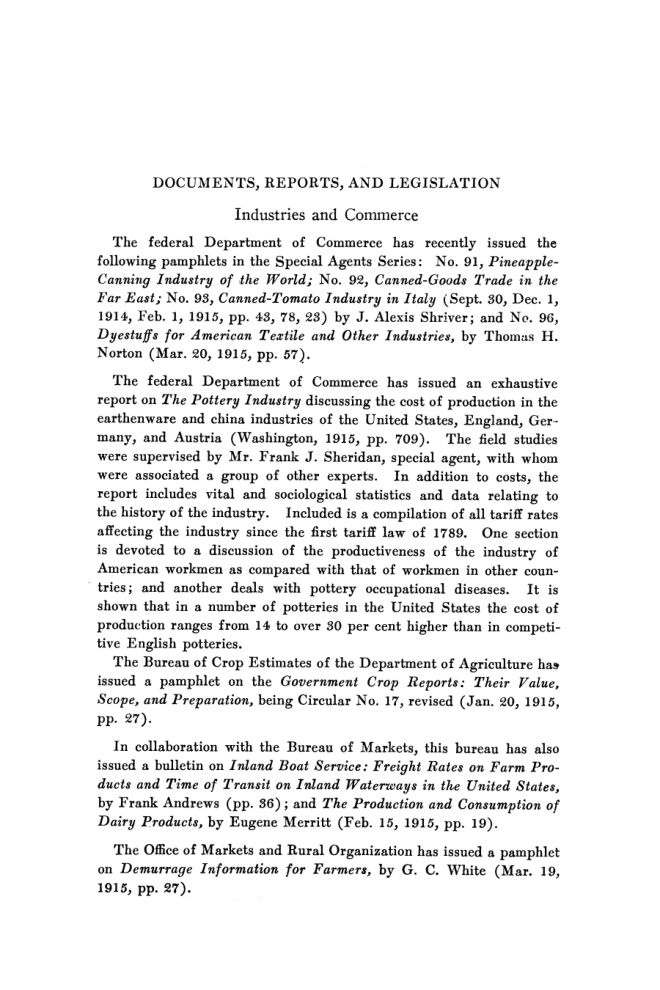

Quem a indenização protege, a cooperativa dos merceeiros e o monopólio
Leitura: 11 min
Fisher mede quantos empregados as leis de indenização por acidente cobriam; Patterson conta a cooperativa dos merceeiros de Filadélfia; Bishop, os adidos comerciais; Blue regula o monopólio pelo mercado de capitais.


Em 14 de março de 1911, dois estados americanos, Washington e Kansas, aprovaram no mesmo dia as primeiras leis de indenização por acidente de trabalho do país. Quatro anos depois, Willard C. Fisher abre o número de junho de 1915 da American Economic Review com um balanço: 23 estados tinham leis em pleno vigor, com mais da metade da população, e a pergunta deixava de ser se haveria lei e passava a ser qual a melhor.
A edição traz quatro artigos sobre como regras e organizações moldam mercados concretos. Fisher, de Middletown, Connecticut, mede a extensão do campo coberto por essas leis. E. M. Patterson, da University of Pennsylvania, reconstitui trinta anos da associação dos merceeiros varejistas de Filadélfia. Avard Longley Bishop, da Sheffield Scientific School de Yale, descreve o novo corpo de adidos comerciais do Departamento de Comércio. F. K. Blue propõe um método para fixar o preço de um monopólio a partir da cotação de seus próprios títulos. Seguem resenhas organizadas por área, listas de livros novos, documentos oficiais, resumos de periódicos, a lista anual de teses de doutorado em andamento e as notas.
Quantos trabalhadores as leis de indenização protegiam?
Willard C. Fisher (Middletown, Connecticut) · “The Field of Workmen's Compensation in the United States” · pp. 221–278
A indenização por acidente de trabalho substitui a ação judicial contra o empregador por um pagamento fixado em lei, devido sem discussão de culpa. Quando os estados americanos a adotaram, havia entre trinta e quarenta países e províncias com leis desse tipo. Em março de 1915, 23 estados americanos tinham leis em vigor; a de Kentucky fora anulada por um tribunal antes de entrar em vigor. Três entidades, a National Civic Federation, a American Association for Labor Legislation e a Conference of Commissioners on Uniform State Laws, propunham então modelos uniformes.
Fisher desloca o debate. Para ele, o essencial não é a uniformidade, e sim a adequação, e o ponto decisivo não é o valor da indenização, mas o campo da lei: quais empregos ela alcança. A diferença entre pagar 50% ou 66 2/3% do salário pesa pouco no custo total do empregador; estar ou não dentro da lei pesa três ou quatro vezes mais. Para o trabalhador ferido, ter ao menos os US$ 10 por semana, em vez de nada, é a grande vantagem.
“Pode haver uma uniformidade na ruindade.” (“There may be a uniformity in badness.”)
O autor percorre as exclusões. Os dez estados que definem a lei pelas exceções excluem todos o serviço doméstico e o trabalho agrícola; dez usam algum critério de número mínimo de empregados; Rhode Island exclui quem ganha mais de US$ 1.800 por ano, e Maryland, mais de US$ 2.000. A justificativa habitual é o baixo risco da ocupação, que Fisher recusa: a perda de um braço é a mesma em qualquer ofício, e as taxas de seguro indicam que o trabalho agrícola é mais perigoso que a média das fábricas.
As estimativas por estado, que Fisher chama de grosseiras, vão de 97% ou 98% em Nova Jersey a algo entre 35% e 45% em Kansas, Louisiana e Texas. Mesmo com erros de 10 pontos, conclui, a diversidade permaneceria. Sua conclusão é que o campo só será adequado quando coincidir com o campo do acidente industrial, incluindo todos os empregos e ocupações.
O que uma cooperativa de merceeiros consegue fazer?
E. M. Patterson (University of Pennsylvania) · “Co-operation among Retail Grocers in Philadelphia” · pp. 279–291
Patterson começa pela economia da pequena mercearia. Com US$ 500 se equipava uma loja de tamanho médio; entrar no ramo era fácil, a concorrência intensa e a margem curta. Estimava-se que o merceeiro precisava de 15% a 20% de lucro bruto sobre as vendas, mas manteiga e ovos, cerca de 36% das vendas em Filadélfia, rendiam perto de 10%. Em 1911 a cidade tinha 5.266 mercearias, uma para cada 294 habitantes ou 59 famílias.
Com um gasto anual de US$ 200 por família, 59 famílias dariam US$ 11.800 em vendas e US$ 2.360 de lucro bruto; um balconista, dois rapazes de entrega, aluguel, luz, cavalo e selos-prêmio consumiriam US$ 1.720, sobrando US$ 640 para as demais despesas e para a renda do dono. A esse quadro somava-se a concorrência das redes de lojas, que vendiam à vista e compravam em grandes quantidades.
A Retail Grocers' Association of Philadelphia nasceu em 1886 contra uma taxa de US$ 10 por ano sobre os varejistas de querosene. Em 1915 tinha 458 sócios, menos de 8% dos 6.200 merceeiros da cidade, mas os mais fortes. Patterson divide suas iniciativas em três grupos. Fracassaram a agência de empregos, a publicidade conjunta, os departamentos de cobrança e de crédito, travados pelo medo de ofender o freguês, a refinaria criada em 1902 contra a Standard Oil e a campanha contra os selos-prêmio, abandonada em 1904. A ofensiva contra as redes também falhou: o projeto que taxaria em US$ 500 cada loja acima de três passou na câmara estadual por 156 a 1 e empatou em 14 a 14 no senado.
Os êxitos, conclui o autor, foram dois: manter unido um quadro diverso, concentrando na associação seguros, poupança, revista e compras, e a compra cooperativa, que só prejudicou o atacadista. Controlar preços diretamente fracassou, como mostrou o cartão de preços do açúcar de 1889.
Para que servia um adido comercial?
Avard Longley Bishop (Sheffield Scientific School of Yale University) · “Commercial Attaches and the Expansion of Foreign Trade” · pp. 292–302
Bishop parte da mudança na pauta de exportações americana. Em 1870, com uma população de pouco menos de 39 milhões, o comércio exterior somava menos de US$ 829 milhões; no ano fiscal encerrado em 30 de junho de 1913, chegou a US$ 4.279 milhões. Os produtos agrícolas, que eram 84% do valor exportado em 1880, caíram para 55% em 1905, enquanto os manufaturados passaram de 15% para cerca de metade.
Vender manufaturados, argumenta, é outra tarefa: exige competir com britânicos e alemães, que combinavam iniciativa privada, associações comerciais e ação de governo. O cônsul americano não dava conta, porque suas funções iam da inspeção de manifestos de navios à quarentena e à liquidação de heranças. Desde 1905 havia agentes comerciais, especialistas enviados temporariamente para estudar um mercado; um ano antes do artigo, sete estavam em serviço, da Índia à África.
O corpo de adidos comerciais, ligado ao Departamento de Comércio e acreditado nas legações, foi promovido pelo secretário William Redfield e apoiado pela Chamber of Commerce of the United States, cujo referendo aprovou as recomendações. Redfield pediu US$ 150 mil para 1915; em 15 de julho de 1914, o Congresso destinou US$ 100 mil. O exame tinha prova escrita, com uma dissertação de 500 palavras em francês, alemão ou espanhol, e prova oral.
Bishop separa as três funções: o cônsul atende ao local, o agente comercial é especialista de um ramo, e o adido faz pesquisas gerais a serviço de todos os setores. Cita Redfield, para quem o adido deveria ver o que não é feito e apontar como fazê-lo.
“Ele deve fazer trabalho criativo, e não imitativo.” (“He is to do creative and not imitative work.”)
O autor conclui que só o tempo permitirá estimar o benefício do serviço, mas espera que adidos, agentes, diplomatas e cônsules deem ao comércio exportador praticamente toda a ajuda que cabe ao governo.
O mercado de capitais pode fixar o preço de um monopólio?
F. K. Blue · “Automatic Regulation of Monopoly by Competitive Investment” · pp. 303–310
Blue parte dos dois métodos correntes de lidar com o monopólio: dividi-lo em unidades menores, que deveriam competir, ou fixar por lei um preço que dê apenas um retorno razoável sobre o capital. Ambos, diz, são arbitrários. Propõe um terceiro, que chama de regulação do monopólio por investimento competitivo: em vez de restaurar a concorrência na venda do produto, levá-la para o fornecimento de capital.
O mecanismo tem três peças. O valor do investimento é fixado uma vez por todas, pelo dinheiro efetivamente aplicado ou por avaliação. A taxa de retorno aceita pelo público é medida pela razão entre os dividendos normais esperados e a cotação média dos títulos da empresa no ano anterior. Essa taxa, aplicada ao valor fixado, dá a parcela de dividendos que se soma aos custos de operação no preço do ano seguinte. Quanto mais os investidores pagam pelos títulos, menor a taxa indicada e menor o preço permitido.
Para evitar manipulação, a cotação usada seria a menor oferta diária de venda que não encontrou comprador. Quem pedisse caro demais reduziria a taxa e o preço; quem oferecesse barato demais arriscaria vender. Excessos e déficits de um ano seriam compensados nos seguintes, o que daria aos títulos uma previsibilidade próxima à das obrigações da empresa.
O autor responde à objeção de que, com regulação generalizada, desapareceria a base para medir o retorno razoável: no seu método, cada título forneceria sua própria taxa. Argumenta ainda que o esquema facilitaria financiar ampliações, como as de ferrovias, sem aumentos arbitrários de tarifas, e que tornaria inútil a especulação com os títulos. Reconhece, no fim, que nada indica que o método afetaria por si só as causas do desemprego.
O que mais há na edição?
As resenhas, organizadas por área, incluem The Great Society, de Graham Wallas, por A. B. Wolfe; Work and Wealth, de J. A. Hobson, por Max Sylvius Handman; a Cyclopedia of American Government, organizada por Andrew C. McLaughlin e Albert Bushnell Hart; The Industrial History of Modern England, de George Herbert Perris, por Carlton Hayes; Progressive Democracy, de Herbert Croly, por William English Walling, e Progressivism—and After, do próprio Walling, por O. D. Skelton; e a história do imposto geral sobre a propriedade em Illinois, de Robert Murray Haig. Os documentos começam por folhetos do Departamento de Comércio sobre conservas; seguem os resumos de periódicos e a décima segunda lista de teses de doutorado em economia política em andamento. As notas anunciam a reunião da American Economic Association em San Francisco, de 11 a 13 de agosto.
Na minha leitura
Na minha leitura, os quatro artigos tratam da distância entre a forma de uma regra e o seu alcance. Fisher mostra que leis com o mesmo nome cobriam de pouco mais de um terço a quase todos os empregados, conforme as exclusões; Patterson mostra que a mesma associação fracassou ao tentar controlar preços e acertou ao organizar compras; Bishop descreve uma instituição cujo valor dependeria da divisão de tarefas com cônsules e agentes.
Blue leva o raciocínio ao extremo oposto: em vez de fixar o preço por decisão administrativa, deixa que o custo do capital revelado no mercado o determine. A proposta antecipa a pergunta que a regulação de serviços públicos nunca deixou de enfrentar: como dar ao investidor um retorno compatível com o risco sem transferir ao consumidor os ganhos de quem tem o monopólio.
Glossário
- Indenização por acidente de trabalho (workmen's compensation)
- pagamento ao trabalhador acidentado fixado em lei, devido sem discussão de culpa, em lugar da ação judicial contra o empregador.
- Campo da indenização
- expressão de Fisher para o conjunto de empregos e ocupações alcançados pela lei.
- Lei optativa
- lei em que o empregador escolhe aderir ao sistema, sob a ameaça de perder defesas tradicionais nos processos por danos.
- Atacadista (jobber)
- intermediário que compra do fabricante e revende ao varejista.
- Rede de lojas (chain store)
- várias lojas sob uma única administração central.
- Selos-prêmio (trading stamps)
- selos dados ao freguês na compra e trocados depois por mercadorias.
- Adido comercial
- funcionário acreditado numa legação para estudar e informar sobre a indústria e o comércio do país em que serve.
- Investimento competitivo
- método de Blue para fixar o preço de um monopólio pela taxa de retorno que o mercado aceita nos títulos da própria empresa.
Artigos (4)
- The Field of Workmen's Compensation in the United States — Willard C. Fisher (Middletown, Connecticut) (pp. 221–278) · resenha acima · comentário completo · JSTOR
- Co-operation among Retail Grocers in Philadelphia — E. M. Patterson (University of Pennsylvania) (pp. 279–291) · resenha acima · JSTOR
- Commercial Attaches and the Expansion of Foreign Trade — Avard Longley Bishop (Sheffield Scientific School of Yale University) (pp. 292–302) · resenha acima · JSTOR
- Automatic Regulation of Monopoly by Competitive Investment — F. K. Blue (pp. 303–310) · resenha acima · comentário completo · JSTOR
Resenhas (30)
- Graham Wallas, The Great Society. A Psychological Analysis — A. B. Wolfe (pp. 311–314). Resenha de A. B. Wolfe. JSTOR
- J. A. Hobson, Work and Wealth. A Human Valuation — Max Sylvius Handman (pp. 314–315). Resenha de Max Sylvius Handman. JSTOR
- Commerce of Rhode Island, 1726–1800, vol. I (Collections of the Massachusetts Historical Society) — Charles M. Andrews (pp. 316–318). Resenha de Charles M. Andrews. JSTOR
- Andrew C. McLaughlin e Albert Bushnell Hart (eds.), Cyclopedia of American Government — Raymond Garfield Gettell (pp. 318–320). Resenha de Raymond Garfield Gettell. JSTOR
- A. E. Bland, P. A. Brown e R. H. Tawney (eds.), English Economic History. Select Documents — Clive Day (pp. 320–321). Resenha de Clive Day. JSTOR
- George Herbert Perris, The Industrial History of Modern England — Carlton Hayes (pp. 322–323). Resenha de Carlton Hayes. JSTOR
- Reginald Lennard, Economic Notes on English Agricultural Wages — B. H. Hibbard (pp. 325–327). Resenha de B. H. Hibbard. JSTOR
- Robert P. Reeder, The Validity of Rate Regulations, State and Federal — Edgar J. Rich (pp. 329–331). Resenha de Edgar J. Rich. JSTOR
- Thomas Conway Jr. e Albert W. Atwood, Investment and Speculation; Franklin Escher, Practical Investing; Edward Sherwood Mead, The Careful Investor; Roger W. Babson, Bonds and Stocks — J. W. Crook (pp. 333–335). Resenha de J. W. Crook. JSTOR
- John B. Geijsbeek, Ancient Double-Entry Bookkeeping — J. E. Sterrett (pp. 335–337). Resenha de J. E. Sterrett. JSTOR
- Paul-Joseph Esquerre, The Applied Theory of Accounts — W. R. Gray (pp. 337–338). Resenha de W. R. Gray. JSTOR
- DeWitt Carl Eggleston, Municipal Accounting — Harvey S. Chase (pp. 339–340). Resenha de Harvey S. Chase. JSTOR
- Clarence Bertrand Thompson, Scientific Management — J. C. Duncan (pp. 340–342). Resenha de J. C. Duncan. JSTOR
- W. P. Bennett, The History and Present Position of the Bill of Lading as a Document of Title to Goods — Abbott Payson Usher (pp. 342–343). Resenha de Abbott Payson Usher. JSTOR
- Arthur E. Suffern, Conciliation and Arbitration in the Coal Industry of America — Eliot Jones (pp. 348–350). Resenha de Eliot Jones. JSTOR
- George M. Price, The Modern Factory. Safety, Sanitation and Welfare — Mayo E. Roe e Emery R. Hayhurst (pp. 350–352). Resenha de Mayo E. Roe e Emery R. Hayhurst. JSTOR
- Harry Gunnison Brown, International Trade and Exchange — E. W. Kemmerer (pp. 354–356). Resenha de E. W. Kemmerer. JSTOR
- John Thom Holdsworth, Money and Banking — Chester A. Phillips (pp. 356–358). Resenha de Chester A. Phillips. JSTOR
- Myron T. Herrick e R. Ingalls, Rural Credits. Land and Co-operative — Jesse E. Pope (pp. 358–362). Resenha de Jesse E. Pope. JSTOR
- Wen Pin Wei, The Currency Problem in China — A. P. Winston (pp. 362–363). Resenha de A. P. Winston. JSTOR
- Costantino Ottolenghi, I Prezzi nella Industria Cotoniera — James B. Morman (pp. 363–365). Resenha de James B. Morman. JSTOR
- Robert Murray Haig, A History of the General Property Tax in Illinois — John E. Brindley (pp. 367–369). Resenha de John E. Brindley. JSTOR
- A. Grotjahn, Geburten-Rückgang und Geburten-Regelung im Lichte der individuellen und der sozialen Hygiene — James A. Field (pp. 373–375). Resenha de James A. Field. JSTOR
- Sidney L. Gulick, The American Japanese Problem; Edward Alsworth Ross, The Old World in the New — A. B. Wolfe (pp. 375–378). Resenha de A. B. Wolfe. JSTOR
- Algernon S. Crapsey, The Rise of the Working-Class — Walter E. Weyl (pp. 379–380). Resenha de Walter E. Weyl. JSTOR
- Herbert Croly, Progressive Democracy — William English Walling (pp. 380–381). Resenha de William English Walling. JSTOR
- Albert H. Leake, Industrial Education: Its Problems, Methods and Dangers — H. S. Person (pp. 381–383). Resenha de H. S. Person. JSTOR
- National Civic Federation, Social Insurance Department, Report of the Committee on Preliminary Foreign Inquiry — Robert F. Foerster (pp. 386–388). Resenha de Robert F. Foerster. JSTOR
- William English Walling, Progressivism—and After — O. D. Skelton (pp. 391–394). Resenha de O. D. Skelton. JSTOR
- Albert Franz, Die soziale Katholizismus in Deutschland bis zum Tode Kettlers — J. E. LeRossignol (pp. 394–396). Resenha de J. E. LeRossignol. JSTOR
Novos livros (17)
- New Books (pp. 315–316). Lista de livros recentes da seção de obras gerais, teoria e sua história, com notas breves. JSTOR
- New Books (pp. 323–325). Lista de livros recentes da seção de história econômica e geografia, com notas breves. JSTOR
- New Books (pp. 327–328). Lista de livros recentes da seção de agricultura, mineração, florestas e pesca, com notas breves. JSTOR
- New Books (pp. 328–329). Lista de livros recentes da seção de indústrias manufatureiras, com notas breves. JSTOR
- New Books (pp. 331–332). Lista de livros recentes da seção de transportes e comunicações, com notas breves. JSTOR
- New Books (pp. 332–333). Lista de livros recentes da seção de comércio e crises comerciais, com notas breves. JSTOR
- New Books (pp. 344–346). Lista de livros recentes da seção de contabilidade, métodos de negócios e investimentos, com notas breves. JSTOR
- New Books (pp. 346–348). Lista de livros recentes da seção de capital e organização capitalista, com notas breves. JSTOR
- New Books (pp. 352–354). Lista de livros recentes da seção de trabalho e organizações trabalhistas, com notas breves. JSTOR
- New Books (pp. 365–367). Lista de livros recentes da seção de moeda, preços, crédito e bancos, com notas breves. JSTOR
- New Books (pp. 369–372). Lista de livros recentes da seção de finanças públicas, tributação e tarifas, com notas breves. JSTOR
- New Books (pp. 378–379). Lista de livros recentes da seção de população e migração, com notas breves. JSTOR
- New Books (pp. 383–386). Lista de livros recentes da seção de problemas sociais e reformas, com notas breves. JSTOR
- New Books (pp. 388–389). Lista de livros recentes da seção de seguros e pensões, com notas breves. JSTOR
- New Books (pp. 390–391). Lista de livros recentes da seção de pauperismo e caridade, com notas breves. JSTOR
- New Books (pp. 396). Lista de livros recentes da seção de socialismo e empresas cooperativas, com notas breves. JSTOR
- New Books (pp. 396). Lista de livros recentes da seção de estatística e seus métodos, com notas breves. JSTOR
Documentos, periódicos e notas (5)
- [The United States Federal Internal Tax History from 1861 to 1871] — Henry B. Gardner (pp. 367). Carta de Henry B. Gardner ao editor sobre um termo de sua resenha, publicada em março, do livro do Dr. Smith sobre a tributação interna federal de 1861 a 1871. JSTOR
- Documents, Reports, and Legislation — redação e colaboradores (pp. 397–431). Resumos de documentos oficiais, a começar pelos folhetos da série de agentes especiais do Departamento de Comércio. JSTOR
- Periodicals — redação e colaboradores (pp. 432–475). Resumos de artigos de periódicos americanos e estrangeiros, por área. JSTOR
- Doctoral Dissertations (pp. 476–489). Décima segunda lista de teses de doutorado em economia política em andamento nas universidades e faculdades americanas. JSTOR
- Notes — redação (pp. 490–498). Notas da associação e do meio acadêmico, a começar pelo programa provisório da reunião de San Francisco, de 11 a 13 de agosto. JSTOR
Fontes
- The Field of Workmen's Compensation in the United States (pp. 221–278). JSTOR · Internet Archive (PDF)
- Co-operation among Retail Grocers in Philadelphia (pp. 279–291). JSTOR · Internet Archive (PDF)
- Commercial Attaches and the Expansion of Foreign Trade (pp. 292–302). JSTOR · Internet Archive (PDF)
- Automatic Regulation of Monopoly by Competitive Investment (pp. 303–310). JSTOR · Internet Archive (PDF)
- [untitled] The American Economic Review, (1915-06-01), pages 311-314 (pp. 311–314). JSTOR · Internet Archive (PDF)
- [untitled] The American Economic Review, (1915-06-01), pages 314-315 (pp. 314–315). JSTOR · Internet Archive (PDF)
- New Books (pp. 315–316). JSTOR · Internet Archive (PDF)
- [untitled] The American Economic Review, (1915-06-01), pages 316-318 (pp. 316–318). JSTOR · Internet Archive (PDF)
- [untitled] The American Economic Review, (1915-06-01), pages 318-320 (pp. 318–320). JSTOR · Internet Archive (PDF)
- [untitled] The American Economic Review, (1915-06-01), pages 320-321 (pp. 320–321). JSTOR · Internet Archive (PDF)
- [untitled] The American Economic Review, (1915-06-01), pages 322-323 (pp. 322–323). JSTOR · Internet Archive (PDF)
- New Books (pp. 323–325). JSTOR · Internet Archive (PDF)
- [untitled] The American Economic Review, (1915-06-01), pages 325-327 (pp. 325–327). JSTOR · Internet Archive (PDF)
- New Books (pp. 327–328). JSTOR · Internet Archive (PDF)
- New Books (pp. 328–329). JSTOR · Internet Archive (PDF)
- [untitled] The American Economic Review, (1915-06-01), pages 329-331 (pp. 329–331). JSTOR · Internet Archive (PDF)
- New Books (pp. 331–332). JSTOR · Internet Archive (PDF)
- New Books (pp. 332–333). JSTOR · Internet Archive (PDF)
- [untitled] The American Economic Review, (1915-06-01), pages 333-335 (pp. 333–335). JSTOR · Internet Archive (PDF)
- [untitled] The American Economic Review, (1915-06-01), pages 335-337 (pp. 335–337). JSTOR · Internet Archive (PDF)
- [untitled] The American Economic Review, (1915-06-01), pages 337-338 (pp. 337–338). JSTOR · Internet Archive (PDF)
- [untitled] The American Economic Review, (1915-06-01), pages 339-340 (pp. 339–340). JSTOR · Internet Archive (PDF)
- [untitled] The American Economic Review, (1915-06-01), pages 340-342 (pp. 340–342). JSTOR · Internet Archive (PDF)
- [untitled] The American Economic Review, (1915-06-01), pages 342-343 (pp. 342–343). JSTOR · Internet Archive (PDF)
- New Books (pp. 344–346). JSTOR · Internet Archive (PDF)
- New Books (pp. 346–348). JSTOR · Internet Archive (PDF)
- [untitled] The American Economic Review, (1915-06-01), pages 348-350 (pp. 348–350). JSTOR · Internet Archive (PDF)
- [untitled] The American Economic Review, (1915-06-01), pages 350-352 (pp. 350–352). JSTOR · Internet Archive (PDF)
- New Books (pp. 352–354). JSTOR · Internet Archive (PDF)
- [untitled] The American Economic Review, (1915-06-01), pages 354-356 (pp. 354–356). JSTOR · Internet Archive (PDF)
- [untitled] The American Economic Review, (1915-06-01), pages 356-358 (pp. 356–358). JSTOR · Internet Archive (PDF)
- [untitled] The American Economic Review, (1915-06-01), pages 358-362 (pp. 358–362). JSTOR · Internet Archive (PDF)
- [untitled] The American Economic Review, (1915-06-01), pages 362-363 (pp. 362–363). JSTOR · Internet Archive (PDF)
- [untitled] The American Economic Review, (1915-06-01), pages 363-365 (pp. 363–365). JSTOR · Internet Archive (PDF)
- New Books (pp. 365–367). JSTOR · Internet Archive (PDF)
- [The United States Federal Internal Tax History from 1861 to 1871] (pp. 367). JSTOR · Internet Archive (PDF)
- [untitled] The American Economic Review, (1915-06-01), pages 367-369 (pp. 367–369). JSTOR · Internet Archive (PDF)
- New Books (pp. 369–372). JSTOR · Internet Archive (PDF)
- [untitled] The American Economic Review, (1915-06-01), pages 373-375 (pp. 373–375). JSTOR · Internet Archive (PDF)
- [untitled] The American Economic Review, (1915-06-01), pages 375-378 (pp. 375–378). JSTOR · Internet Archive (PDF)
- New Books (pp. 378–379). JSTOR · Internet Archive (PDF)
- [untitled] The American Economic Review, (1915-06-01), pages 379-380 (pp. 379–380). JSTOR · Internet Archive (PDF)
- [untitled] The American Economic Review, (1915-06-01), pages 380-381 (pp. 380–381). JSTOR · Internet Archive (PDF)
- [untitled] The American Economic Review, (1915-06-01), pages 381-383 (pp. 381–383). JSTOR · Internet Archive (PDF)
- New Books (pp. 383–386). JSTOR · Internet Archive (PDF)
- [untitled] The American Economic Review, (1915-06-01), pages 386-388 (pp. 386–388). JSTOR · Internet Archive (PDF)
- New Books (pp. 388–389). JSTOR · Internet Archive (PDF)
- New Books (pp. 390–391). JSTOR · Internet Archive (PDF)
- [untitled] The American Economic Review, (1915-06-01), pages 391-394 (pp. 391–394). JSTOR · Internet Archive (PDF)
- [untitled] The American Economic Review, (1915-06-01), pages 394-396 (pp. 394–396). JSTOR · Internet Archive (PDF)
- New Books (pp. 396). JSTOR · Internet Archive (PDF)
- New Books (pp. 396). JSTOR · Internet Archive (PDF)
- Documents, Reports, and Legislation (pp. 397–431). JSTOR · Internet Archive (PDF)
- Periodicals (pp. 432–475). JSTOR · Internet Archive (PDF)
- Doctoral Dissertations (pp. 476–489). JSTOR · Internet Archive (PDF)
- Notes (pp. 490–498). JSTOR · Internet Archive (PDF)
- Sumário da edição no JSTOR: The American Economic Review, vol. 5, nº 2.
Documento em domínio público (EUA, publicado antes de 1931), via JSTOR Early Journal Content e Internet Archive. Resumo e comentário do autor deste site, sem afiliação com a American Economic Association. Encontrou um erro? Escreva: a correção é publicada no próprio texto, com data.
← Nº 135 · Princeton, 1914: direito e propriedade, a bolsa em debate e o mercado Nº 137 · A crise de 1914, a tarifa no preço final e a fusão dos sindicatos →